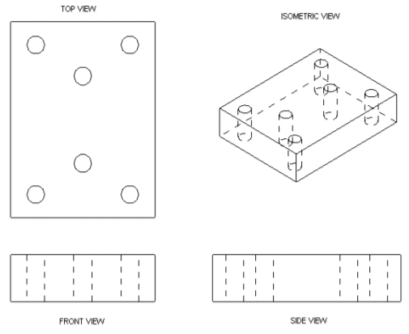

NX12 <<
Previous Next >> W17
第5章起草
NX 12 Drafting應用程序使您可以創建工程圖，視圖，幾何形狀，尺寸和 起草製造所需的註釋以及對工業設計的理解。
本章的目的是為設計人員/製圖員提供有關起草工具的足夠知識，以便 創建其設計的基本圖紙。
製圖應用程序支持工程製圖符合ANSI標準的模型。
在解釋了起草申請的基礎之後，我們將逐步介紹起草一些先前創建的模型的方法。
5.1概述
製圖應用程序旨在允許您制定和維護行業標準
直接從3D模型或裝配零件製造工程圖。
在中創建的工程圖製圖應用程序與模型完全相關，對模型所做的任何更改都與自動反映在工程圖中。
Drafting應用程序還提供了一組2D繪圖滿足2D中心設計和佈局要求的工具。
您可以製作獨立的2D工程圖。繪圖應用程序基於如下圖所示的實體模型創建視圖。
通過繪圖，可以輕鬆地創建具有正交視圖，剖面圖，導入視圖，輔助視圖，尺寸和其他註釋。

製圖應用程序的一些有用功能包括：
1）選擇第一個視圖後，可以添加其他正交視圖並對齊 只需單擊幾個按鈕。
2）每個視圖都直接與實體關聯。 因此，當更改實體時， 圖紙將隨視圖和尺寸一起直接更新。
3）草稿註釋（尺寸，標籤和帶引線的符號）直接放置在 工程圖，並在更改實體時自動更新。
我們將逐步介紹如何創建視圖以及如何使用和修改註釋例子。
5.2創建草稿
➢打開文件Arborpress_rack.prt.
➢從NX 12界面中，選擇File→Draft如圖所示或選擇Application選項卡 然後選擇製圖.png)
首次打開“繪圖應用程序”時，會彈出一個窗口，要求您輸入 模板，標準尺寸或自定義尺寸，單位和投影角度。
尺寸
尺寸允許您選擇圖紙的尺寸。
您可以創建一些經常使用的標準模板取決於公司標準。
.png)
.png)
有幾種標準尺寸的圖紙可供您選擇。
如果您的圖紙不適合標準尺寸的圖紙，還可以定義“自定義”尺寸的圖紙。
預習
這顯示了模板的整體設計。
單位
單位遵循3-D模型的默認單位。如果您需要從“繪圖應用程序”開始 在這裡選擇單位。
投影
您可以選擇“第一角度”或“第三角度”投影方法。
要開始使用“繪圖應用程序”，我們將從創建“標準尺寸”圖紙開始：
➢單擊標準尺寸單選按鈕
➢在尺寸窗口的下拉菜單中，選擇紙張B，尺寸為11 x 17
➢使用下拉菜單並在“比例”下選擇“自定義比例”，將比例更改為1:25。
➢點擊確定
這將打開“製圖申請”以及以下內容
這將打開“製圖應用程序”，並顯示以下屏幕。
首先讓我們看一下“草稿應用程序界面”。
.png)
您將看到一個彈出對話框，它將幫助您選擇零件，視圖和其他選項。
➢更改選項和視圖，然後單擊完成
➢選擇插入→查看→基礎或單擊基礎.png)
在視圖組中查看將顯示帶有“視圖”和“比例”選項的“基本視圖”對話框以及一個 對象的浮動圖。
➢選擇前面的視圖
您可以在屏幕上找到“前視圖”投影。 您可以將鼠標光標移到屏幕上，然後單擊要查看的位置。
設置前視圖後，將彈出另一個對話框，要求您在以下位置設置其他視圖
圖紙邊界內屏幕上任何位置。
您可以通過移動光標找到不同的視圖圍繞第一個視圖。
如果要添加任何關閉此文件或更改為後的正交視圖其他命令模式
➢選擇插入→視圖→投影視圖或
從菜單中選擇“投影視圖”圖標查看組
現在，讓我們創建所有其他正交投影視圖，然後在屏幕上的所需位置單擊。
➢如果您關閉了“投影視圖”對話框，則可以通過單擊重新打開它
視圖組中的“投影視圖”圖標
➢移動光標並單擊以獲取其他視圖
➢單擊“投影視圖”對話框上的“關閉”，或按鍵盤上的鍵關閉視窗在創建尺寸之前，讓我們刪除每個視圖中的邊框，因為這會增加混亂
與實體線。
➢選擇菜單→首選項→起草或單擊
快速訪問工具欄中的“圖標”以查找“製圖”優先
“製圖首選項”窗口將彈出。
➢單擊查看選項卡按鈕
➢取消選中顯示邊框上的刻度，如下圖所示，然後單擊好
還有許多其他選項，例如小數位數，隱藏線，角度和螺紋
你可以在這裡找到。 例如，您可以在製圖首選項→中找到隱藏線的選項→視圖→公共→隱藏線
5.3尺寸
現在，我們繼續為這些視圖創建尺寸。 尺寸可以插入如下所述的兩種方式之一：
➢選擇菜單→插入→尺寸
或著
➢單擊尺寸工具欄，如下圖所示
➢單擊“點和邊”，移動鼠標，然後單擊適當的位置進行繪製尺寸
此窗口中的圖標有助於更改屬性尺寸。
➢單擊設置按鈕
在這裡，您將能夠修改尺寸設置。 一種對話框如下所示。
第一個列表用於刻字。 這允許用戶證明並選擇幀大小。
在裡面線/箭頭部分，您可以更改箭頭線，箭頭頭，角度格式等的粗細。
最重要的部分是“公差”列表。 在這裡您可以改變設計公差值。
可以修改顯示類型，數字所需的精度和其他類似選項這裡。
下一個圖標是“文本”選項，可用於編輯單位，文本樣式，字體和其他文字相關方面。
➢在創建的第一個視圖（前視圖）上，單擊機架的左上角，然後在右上角將會出現代表這些點之間距離的尺寸。
你可以把通過在屏幕上移動鼠標來確定尺寸的位置。
每當您將視圖放入該表格考慮到您將在其周圍放置尺寸。
➢要在圖紙上設置尺寸，請將尺寸放置在視圖上方，如下所示：
顯示並單擊鼠標左鍵即使在創建尺寸後，也可以編輯尺寸的屬性。
➢右鍵單擊剛創建的尺寸，然後選擇“設置”或“編輯顯示”
➢您可以在此處修改字體，顏色，樣式和其他更詳細的信息
➢為所有其他視圖指定尺寸，如下圖所示
5.4剖面圖
讓我們為同一零件創建剖面圖，以顯示孔的深度和輪廓
➢選擇插入→視圖→截面或從視圖組中單擊視圖截面圖標
在功能區欄中
➢單擊基本視圖底部，如圖所示。 這將顯示虛線有兩個箭頭標記的線表示剖面平面的方向（橙色虛線向上的箭頭）。
➢單擊視圖中間，如圖所示。 這將確定剖面線的位置（剖面圖）
現在，在視圖周圍移動光標以獲取剖面平面的方向。 保持箭頭垂直向上指點並將截面圖拖動到基本視圖的底部。
如果有干擾，請調整尺寸位置。 最終圖紙應該看起來像下圖所示。
保存並關閉模型。
5.5產品和製造信息
產品和製造信息（PMI）是NX中的重要應用之一，
提供用於在3D環境中記錄產品的註釋工具。
PMI申請包括一個全面的3D註釋環境，允許設計團隊共享細節
例如幾何尺寸和公差（GD＆T），表面光潔度，焊接信息，材料規格，評論，政府安全信息或專有信息，等直接添加到3D模型中。
PMI符合行業標準的3D產品定義和
因此，從事協作項目的產品團隊將使用3D模型作為合法的 完整記錄產品和製造信息的方法。
在下面的示例中，我們將打開一個零件文件，在3D模型上創建尺寸和註釋在PMI應用程序中，並學習如何繼承尺寸和註釋到草稿中應用。
這僅出於說明目的。
➢打開文件Impeller_impeller.prt
➢從NX 12界面中選擇File→PMI（打開復選標記）
這應該在“工具”和“應用程序”選項卡之間創建一個附加的選項卡PMI。
選擇PMI標籤以進入如下所示的PMI應用程序。
在此模式下，功能區欄中的尺寸，註釋，自定義符號，補充幾何，專業和安全標記小組。
每個小組有幾個選擇這可能有助於描述建模的3D零件。 例如，尺寸標註中的尺寸標註選項組，表面粗糙度和註釋組中的註釋。
➢單擊快速圖標
➢選擇葉輪的端面作為第一個和第二個對像以插入線性
尺寸或單擊線性圖標執行相同的任務.
➢單擊“尺寸”組中的“徑向”圖標，以插入孔的尺寸和葉輪上的曲面
➢單擊補充幾何組中的中心線圖標，然後選擇葉輪的內表面，用於插入零件的中心線
➢單擊“註釋”組中的“註釋”圖標以提供任何註釋或“表面粗糙度”圖標，
選擇對象，文本的位置和引線以插入特定的表面處理細節，
如果需要的話PMI尺寸確定後，葉輪的Trimetric視圖將如下所示。
➢保存文件，選擇“應用程序”選項卡，然後單擊功能區欄中的“繪圖”圖標
➢按照上一節中說明的類似步驟創建圖紙
對於3D部分在創建工作表的過程中，在“視圖創建嚮導”中，選擇“繼承PMI”選項，然後 選擇“與圖形對齊（整個零件）”，然後選中“將PMI繼承到圖形”選項。
這個會繼承3D模型的尺寸並顯示在圖紙上，包括註釋如下所示。
用戶必選擇適當的視圖以反映尺寸在圖紙上.
5.6例子
➢打開模型Impeller_hexa-bolt.prt
➢選擇文件→起草或在應用程序選項卡中選擇起草
➢在圖紙窗口中，選擇圖紙E-34 X 44並將比例值更改為8.0：1.0
➢點擊確定
➢選擇插入→視圖→基本視圖或單擊基本視圖圖標
➢通過重複相同的操作添加前視圖
最後一個示例中說明的過程
➢添加包括右視圖在內的正交視圖和頂視圖
➢選擇首選項→起草
➢取消選中顯示邊框下的框
查看標籤
屏幕將具有以下三個視圖。
為了可視化隱藏線，
➢選擇首選項→起草→查看
要么
➢選擇視圖，單擊鼠標右鍵，然後選擇“設置”，如下所示 將彈出一個窗口，其中包含與視圖有關的各種選項。
➢單擊隱藏線選項卡
➢如下所示，將“進程隱藏線”更改為“虛線”，然後單擊“確定”。
您可以看到隱藏的線條，如右圖所示
現在，我們將繼續進行尺寸標註。
➢選擇插入→尺寸→線性或
點擊“線性尺寸”圖標尺寸組
➢給出所有距離的垂直尺寸
如下所示
對於線程，我們將使用引導線。
➢單擊工具欄中顯示的註釋圖標
➢在打開的註釋窗口中，輸入以下內容文本。
您可以在符號選項卡上找到Ø和度數符號
右手Ø0.20 x 1.5,節距0.05，角度600
➢單擊側視圖中的螺紋軸，按住
鼠標並將“引線”行拖動到視圖放開鼠標，然後再次單擊以放置文本。
5.7練習
對在第4章中建模的零件執行“繪圖”並標註尺寸。
NX12 <<
Previous Next >> W17